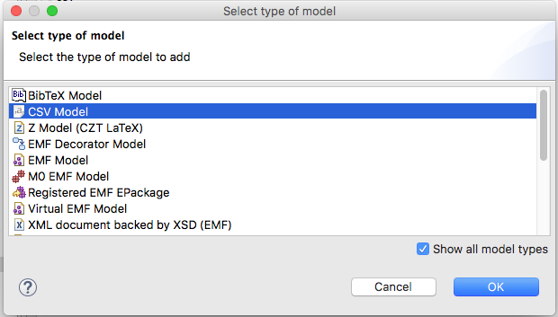

Scripting CSV documents using Epsilon¶
In this article we demonstrate how you can create, query and modify CSV documents in Epsilon programs using the CSV driver. The examples in this article demonstrate using EOL and ETL to script CSV documents. However, it's worth stressing that CSV documents are supported throughout Epsilon. Therefore, you can use Epsilon to (cross-)validate, transform (to other models - XML or EMF-based -, or totext), compare and merge your CSV documents.
Note: This article is consistent with Epsilon versions 1.5+.
The CSV Model Configuration Dialog¶
To add a CSV document to your Epsilon launch configuration you first need to click on "Show all model types" in order to display the CSV Model type. From there you can select "CSV Model" from the list of available model types.

Then you can configure the details of your document (name, file etc.) in the screen that pops up.

You need to provide a name for the model and select the CSV file using the "Browse Workspace..." button.
The CSV section allows you to define specific behaviour for the CSV model.
-
The Field Separator allows you to select a different separator than comma.... yes, they are called comma-separated files, but sometimes a colon, or a semi-colon, or other char is used as a field separator. Now you can tell the model loader which one too use. By default it is a comma.
-
The Quote Character allows you to select the character used for quotes. Quotes are used when a column value contains the field separator to avoid erroneous input.
-
The Known Headers tells the loader that the first row of your file contains headers. Headers can late be used to access fields of a row.
-
The Varargs Header tells the loader that the last column/field of the file can span multiple columns. This is not the "standard" (did you know that RFC 4180 describes CSV file standards?), but in some cases it can be useful.
-
Finally, the Id Field allows you to optionally select one of the fields as an id for your model elements. When using Known Headers, this should be the name of one of the fields. If not, it should be the index (integer) of the field.
Next we show how the different options can be used when working with CSV models.
Querying a CSV document¶
All elements in the CSV model are of type Row, that is, all model
access has to be done using that type.
Header-less CSV Model¶
Consider the following NoHeaders.csv input.
604-78-8459,Ricoriki,Dwyr,rdwyr0@parallels.com,Male,VP Quality Control,2558058636921002,Horror
272-41-1349,Norry,Halpin,nhalpin1@slashdot.org,Female,Legal Assistant,,Drama
844-07-0023,Matteo,Macer,mmacer2@sogou.com,Male,Tax Accountant,3542981651057648,Horror
429-41-4964,Kattie,Fysh,kfysh3@angelfire.com,Female,Senior Financial Analyst,,Comedy
378-90-9530,Link,Proffitt,lproffitt4@cloudflare.com,Male,Paralegal,,Drama
811-26-0387,Rafferty,Sobieski,rsobieski5@usatoday.com,Male,Physical Therapy Assistant,5602242765074843,Horror
386-53-1139,Ernestine,Kringe,ekringe6@gov.uk,Female,Software Consultant,3531096662484096,Drama
850-05-5333,Flossy,Mobberley,fmobberley7@msn.com,Female,Chief Design Engineer,3558038696922012,Romance
605-52-9809,Tull,Ingerith,tingerith8@surveymonkey.com,Male,VP Quality Control,,Drama
580-79-7291,Derry,Laurisch,dlaurisch9@taobao.com,Male,Software Test Engineer I,,War
676-89-8860,Cosetta,Vlasov,cvlasova@livejournal.com,Female,Nurse Practicioner,,Thriller
748-10-2370,Lissa,Stanger,lstangerb@tmall.com,Female,Analyst Programmer,,Thriller
164-18-3409,Giffie,Boards,gboardsc@gmpg.org,Male,Graphic Designer,3575314620284632,Comedy
212-06-7778,Rabbi,Varran,rvarrand@jugem.jp,Male,GIS Technical Architect,3551249058791476,Horror
628-02-3617,Olvan,Alabone,oalabonee@archive.org,Male,Help Desk Technician,,Thriller
318-48-3006,Constantino,Eyckelbeck,ceyckelbeckf@histats.com,Male,Recruiter,564182300132483644,War
122-74-6759,Nickolas,Collard,ncollardg@dot.gov,Male,Web Designer IV,,Drama
309-57-3090,Chere,Hurry,churryh@huffingtonpost.com,Female,Tax Accountant,,Mystery
833-32-9040,Mattie,Hamon,mhamoni@auda.org.au,Male,Structural Engineer,,Drama
101-82-2564,Hew,Goble,hgoblej@ocn.ne.jp,Male,VP Accounting,,Comedy
Since there are no headers, we need to access the information via the general field attribute and index (0 based):
// Get all Rows elements
var people = Row.all;
// Get a random person
var p = people.random();
// Check the gender of p (field 4)
// Prints 'Male' or 'Female'
p.field.at(4).println();
// Get the emails (field 3) of people that like Horror movies (field 7) so we can let them know a new movie is out.
// Prints 'Sequence {rdwyr0@parallels.com, mmacer2@sogou.com, rsobieski5@usatoday.com, rvarrand@jugem.jp}'
people.select(p | p.field.at(7) == 'Horror').collect(p | p.field.at(3)).println();Header-full CSV Model¶
Consider that we add headers to the previous CSV model (Headers.csv)
id,first_name,last_name,email,gender,job,credit_card,movies
604-78-8459,Ricoriki,Dwyr,rdwyr0@parallels.com,Male,VP Quality Control,2558058636921002,Horror
272-41-1349,Norry,Halpin,nhalpin1@slashdot.org,Female,Legal Assistant,,Drama
...
We can query the same information as before, but this time we can use the field names defined by the header:
// Get all Rows elements
var people = Row.all;
// Get a random person
var p = people.random();
// Check the gender of p
// Prints 'Male' or 'Female'
p.gender.println();
// Get the emails of people that like Horror movies so we can let them know a new movie is out.
// Prints 'Sequence {rdwyr0@parallels.com, mmacer2@sogou.com, rsobieski5@usatoday.com, rvarrand@jugem.jp}'
people.select(p | p.movies == 'Horror').collect(p | p.email).println();
// Get all males and females that like Thrillers and set up dates
// Prints
// Olvan and Cosetta is a match made in heaven!
// Olvan and Lissa is a match made in heaven!
var mt = people.select(p | p.movies == 'Thriller' and p.gender == 'Male');
var ft = people.select(p | p.movies == 'Thriller' and p.gender == 'Female');
for (m in mt) {
for (f in ft) {
(m.first_name + " and " + f.first_name + " is a match made in heaven!").println();
}
}Header-full with Varargs CSV Model¶
Last, we have a CSV model with some vararg information, is the same as before, but in this case persons are allowed to have multiple movies. We have also added a quote field that shows the quote character in action.
id,first_name,last_name,email,gender,job,credit_card,quote,movies
604-78-8459,Ricoriki,Dwyr,rdwyr0@parallels.com,Male,VP Quality Control,,Duis at velit eu est congue elementum.,Horror
272-41-1349,Norry,Halpin,nhalpin1@slashdot.org,Female,Legal Assistant,,Aenean sit amet justo. Morbi ut odio.,Drama,Film-Noir,Thriller
844-07-0023,Matteo,Macer,mmacer2@sogou.com,Male,Tax Accountant,3542981651057648,In hac habitasse platea dictumst.,Horror,Mystery,Thriller
429-41-4964,Kattie,Fysh,kfysh3@angelfire.com,Female,Senior Financial Analyst,,Suspendisse potenti. In eleifend quam a odio.,Comedy
378-90-9530,Link,Proffitt,lproffitt4@cloudflare.com,Male,Paralegal,,Suspendisse accumsan tortor quis turpis. Sed ante.,Drama
811-26-0387,Rafferty,Sobieski,rsobieski5@usatoday.com,Male,Physical Therapy Assistant,5602242765074843,"Nulla neque libero, convallis eget, eleifend luctus, ultricies eu, nibh. Quisque id justo sit amet sapien dignissim vestibulum.",Horror
386-53-1139,Ernestine,Kringe,ekringe6@gov.uk,Female,Software Consultant,3531096662484096,Nulla justo. Aliquam quis turpis eget elit sodales scelerisque.,Drama
850-05-5333,Flossy,Mobberley,fmobberley7@msn.com,Female,Chief Design Engineer,3558038696922012,Nulla tempus.,Comedy,Romance
605-52-9809,Tull,Ingerith,tingerith8@surveymonkey.com,Male,VP Quality Control,,"Morbi vestibulum, velit id pretium iaculis, diam erat fermentum justo, nec condimentum neque sapien placerat ante. Nulla justo.",Drama
580-79-7291,Derry,Laurisch,dlaurisch9@taobao.com,Male,Software Test Engineer I,,Praesent blandit lacinia erat. Vestibulum sed magna at nunc commodo placerat.,Drama,War
676-89-8860,Cosetta,Vlasov,cvlasova@livejournal.com,Female,Nurse Practicioner,,In hac habitasse platea dictumst.,Crime,Film-Noir,Thriller
748-10-2370,Lissa,Stanger,lstangerb@tmall.com,Female,Analyst Programmer,,Pellentesque at nulla.,Action,Adventure,Thriller
164-18-3409,Giffie,Boards,gboardsc@gmpg.org,Male,Graphic Designer,3575314620284632,"Morbi vel lectus in quam fringilla rhoncus. Mauris enim leo, rhoncus sed, vestibulum sit amet, cursus id, turpis.",Comedy
212-06-7778,Rabbi,Varran,rvarrand@jugem.jp,Male,GIS Technical Architect,3551249058791476,Suspendisse potenti.,Horror
628-02-3617,Olvan,Alabone,oalabonee@archive.org,Male,Help Desk Technician,,Pellentesque viverra pede ac diam. Cras pellentesque volutpat dui.,Action,Adventure,Sci-Fi,Thriller
318-48-3006,Constantino,Eyckelbeck,ceyckelbeckf@histats.com,Male,Recruiter,564182300132483644,In hac habitasse platea dictumst. Maecenas ut massa quis augue luctus tincidunt.,War
122-74-6759,Nickolas,Collard,ncollardg@dot.gov,Male,Web Designer IV,,Praesent blandit lacinia erat. Vestibulum sed magna at nunc commodo placerat.,Drama
309-57-3090,Chere,Hurry,churryh@huffingtonpost.com,Female,Tax Accountant,,"In tempor, turpis nec euismod scelerisque, quam turpis adipiscing lorem, vitae mattis nibh ligula nec sem.",Drama,Fantasy,Mystery
833-32-9040,Mattie,Hamon,mhamoni@auda.org.au,Male,Structural Engineer,,Duis at velit eu est congue elementum. In hac habitasse platea dictumst.,Drama
101-82-2564,Hew,Goble,hgoblej@ocn.ne.jp,Male,VP Accounting,,Etiam pretium iaculis justo.,Comedy
// Get all Rows elements
var people = Row.all;
// Random thoughts
for (p in people) {
if (p.gender == "Female" and p.movies.includes("Thriller")) {
(p.first_name + " screams '" + p.quote + "' when watching a Thriller. She is afraid of being a " + p.job + ".").println();
}
else if (p.gender == "Male" and p.movies.includes("Drama")) {
(p.first_name + " sighs, but blames '" + p.quote + "' for the tear in his eye. Being a " + p.job + " will never be the same.").println();
}
}
// Output
//Norry screams 'Aenean sit amet justo. Morbi ut odio.' when watching a Thriller. She is afraid of being a Legal Assistant.
//Link sighs, but blames 'Suspendisse accumsan tortor quis turpis. Sed ante.' for the tear in his eye. Being a Paralegal will never be the same.
//Tull sighs, but blames 'Morbi vestibulum, velit id pretium iaculis, diam erat fermentum justo, nec condimentum neque sapien placerat ante. Nulla justo.' for the tear in his eye. Being a VP Quality Control will never be the same.
//Derry sighs, but blames 'Praesent blandit lacinia erat. Vestibulum sed magna at nunc commodo placerat.' for the tear in his eye. Being a Software Test Engineer I will never be the same.
//Cosetta screams 'In hac habitasse platea dictumst.' when watching a Thriller. She is afraid of being a Nurse Practicioner.
//Lissa screams 'Pellentesque at nulla.' when watching a Thriller. She is afraid of being a Analyst Programmer.
//Nickolas sighs, but blames 'Praesent blandit lacinia erat. Vestibulum sed magna at nunc commodo placerat.' for the tear in his eye. Being a Web Designer IV will never be the same.
//Mattie sighs, but blames 'Duis at velit eu est congue elementum. In hac habitasse platea dictumst.' for the tear in his eye. Being a Structural Engineer will never be the same.Querying/modifying CSV documents in EOL¶
The CSV driver support direct query and modification of attribute values:
// Get all Rows elements
var people = Row.all;
// Get a random person
var p = people.random();
p.name.println();
// Change the name
p.name = "Maria Antonieta"
p.name.println();How do I create an element?¶
You can use the new operator for this, and remember that all CSV elements are rows! New Rows will be added at the end of the file when persisting the changes.
// Check how many entries are in the model
// Prints '20'
Row.all.size().println();
// Creates a new book element
var b = new Row;
// Check again
// Prints '21'
Row.all.size().println();Loading an CSV document in your ANT buildfile¶
The following ANT build file demonstrates how you can use ANT to load/store and process CSV documents with Epsilon.
<project default="main">
<target name="main">
<epsilon.csv.loadModel name="people" file="people.csv"
read="true" store="false", knownHeaders="true"/>
</epsilon.csv.loadModel>
<epsilon.eol src="my.eol">
<model ref="people"/>
</epsilon.eol>
</target>
</project>
Loading an CSV document through Java code¶
The following excerpt demonstrates using CSV models using Epsilon\'s Java API.
EolModule module = new EolModule();
module.parse(new File("..."));
CsvModel model = new CsvModel();
model.setName("M");
model.setFile(new File("..."));
char fieldSeparator = ',';
model.setFieldSeparator(fieldSeparator);
model.setKnownHeaders(false);
model.setVarargsHeaders(false);
module.getContext().getModelRepository().addModel(model);
module.getContext().setModule(module);
module.execute();